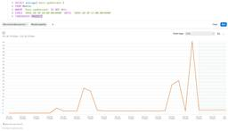

サーバーワークスエンジニアブログ
https://blog.serverworks.co.jp/
AWSトップエンジニア数「AI」「セキュリティ」部門で国内No.1のサーバーワークスのエンジニアが、AWSに関する技術情報をお届けします。
フィード

NRQL PredictionsとPredictive AlertsにAdvanced Computeは不要になりました ー Core Observabilityへの移行内容を整理してみた
サーバーワークスエンジニアブログ
New RelicのNRQL PredictionsとPredictive AlertsがCore Observabilityに移行。料金モデル別の課金と設定手順を公式ドキュメントで整理しました。
2時間前

Step Functions のワークフローを AgentCore Gateway 経由で AI エージェントのツールにしてみた【コンソールで検証】
サーバーワークスエンジニアブログ
はじめに 今回の結論（先に） 実際にチャットで話しかけてみた 背景: なぜ「エージェント × ワークフロー」なのか 構成（概要図） 3 つの層で整理する: 自然言語・MCP ツール・ワークフロー ① ユーザーの言葉（自然言語） ② MCP ツール（ゲートウェイが自動生成） ③ Step Functions のワークフロー 3 つの層の対応 ポイント: 入力の形は、ツールの定義からは分からない ユースケース: エージェントに話しかけてワークフローを動かす（Claude Code で実演） 結果のまとめ 気づいたこと コネクタの仕様をざっくり整理 ピン留めとは ピン留めできるオペレーション・できな…
2日前

【AWS Backup】Timezone等の永続オプション付きAmazon RDS for Oracleでクロスリージョンコピーが失敗する原因と代替策（2026年10月時点）
サーバーワークスエンジニアブログ
※本記事は執筆時点(2026年10月)の情報に基づきます。仕様は変更される可能性があるため、最新の公式ドキュメントもあわせてご確認ください。 はじめに 結論 前提 発生したエラー エラー内容 試してみたこと 原因 AWS Backupはコピー時にオプショングループを引き継がない 手動作成が必要なケース 対処法 注意点 方法1：クロスリージョンコピーだけAmazon RDSネイティブで行う 方法2：Amazon EventBridge + AWS Lambdaで自動化する 検証：AWS Backupが取得したスナップショットを CopyDBSnapshot のコピー元に指定できるか 1. Ama…
4日前
AWS EC2 Auto Scaling の「終了前に起動」をアカウントレベルで有効にしてみた
サーバーワークスエンジニアブログ
今日誕生日の人、おめでとうございます🎉 エデュケーショナルサービス課の森純子です。 Auto Scaling グループのインスタンスを入れ替えるとき、「先に古いインスタンスを止めてから新しいのを起動する」従来の挙動だと、入れ替えの一瞬だけ台数が減って可用性が落ちますよね。かといって「先に新しいのを起動してから古いのを止める」挙動にすると、今度は入れ替え中に台数が一時的に増えて、ほんの少しだけコストが増えます。 2026年10月26日の AWS アップデートで、この「終了前に起動（Launch before terminate）」を、アカウントレベルで全 Auto Scaling グループの既定…
5日前
【パブリックプレビュー版】AWS Well-Architected Agentによる自動レビューと指摘事項の保存
サーバーワークスエンジニアブログ
こんにちは。 アプリケーションサービス本部、DevOps担当の兼安です。 今回は先日パブリックプレビューとして発表されたAWS Well-Architected Agentについて触れてみます。 なお、同サービスは本記事執筆時点（2026年10月下旬）ではパブリックプレビューのため、 一般公開された際には内容やコストが変わる可能性があります。 ご了承ください。 はじめに AWS Well-Architected Agent の前提条件 プロファイルを作成してレビューを実行する 指摘事項の確認 指摘事項はプロファイルを削除すると消える AWS CLIでプロファイルの作成と指摘事項の取得を行う プ…
6日前

Amazon GuardDuty AI Protection の有効化を強くおすすめしています 66
66
サーバーワークスエンジニアブログ
セキュリティサービス部 佐竹です。本ブログでは、2026年7月14日に提供開始された Amazon GuardDuty の「AI Protection」について、有効化を強く推奨する理由と、GUI からの有効化手順を解説します。
6日前

Claude Code更新 auto mode設定・API移行【10/16〜22】
サーバーワークスエンジニアブログ
はじめに サーバーワークスの池田です。 今週（10/16〜10/22）は、v2.1.302から309までの8バージョンが対象です。auto modeに環境を教えるガイド付き設定、/usageの修正提案、APIバージョン2026-10-21への移行が中心です。動作確認は2026年10月23日に、実機のv2.1.309で行いました。 v2.1.303と308は、公式の記載が「バグ修正と信頼性の改善」だけです。 この記事で分かること /auto-mode-setupが読むものと、下書きを保存するまでの流れ。 /usageの1行修正提案、fキーの動作、休眠した会話の再開警告。 /claude-api …
7日前
Claude Apps Gateway経由のClaude CodeでAgentCore GatewayのWeb検索を利用する方法と、何がログに残るか 1
サーバーワークスエンジニアブログ
はじめに こんにちは、久保(賢)です。 Claude CodeをAmazon Bedrock経由で利用する場合、組み込みのWeb検索（WebSearchツール）は利用できません。 Claude Apps Gateway（Anthropicが提供する、Claude Code / Claude Desktop向けのゲートウェイ）を経由してBedrockを利用する構成でも同様です。 一方、Amazon Bedrock AgentCore Gatewayには、マネージドなWeb検索をツールとして提供するWeb Search ツール（コネクタ）があります。 AgentCore GatewayはMCPサー…
7日前

LLMOとSEOの違いを整理する：AIが回答の情報源を得る2つの経路とクローラー
サーバーワークスエンジニアブログ
この記事は 2026年10月 時点の情報です。 はじめに 1. LLMO と SEO の定義と比較表 出典 2. AI が回答の情報源を得る2つの経路 3. 検索連携の流れ（Google の場合） 出典 4. クローラーの3つの役割 出典 まとめ はじめに こんにちは、椎名です。現在OJT先のマーケティング部で学んでいます。 マーケティングの現場では、企業のサービスがお客さまの目に留まるよう、さまざまな取り組みが行われています。そのひとつが SEO（Search Engine Optimization）です。SEO とは、検索エンジンで自分のページを見つけてもらいやすくするための取り組みです。…
10日前
【php2shell】なぜ「memory_limit」のバグに10年以上も誰も気づけなかったのか？PHP特大脆弱性の仕組みを分かりやすく解説
サーバーワークスエンジニアブログ
統合運用課 有川です。 2026年10月21日、PHPのコア機能に存在する極めて深刻な脆弱性「php2shell（CVE-2026-109618 / CVE-2026-109619）」（CVSSスコア 9.2 Critical）が公開されました。 Flatt Securityさんの解説記事などを読んで、「一体どういうことなの…？」と衝撃を受けた方も多いのではないでしょうか。（参考：Flatt Security 技術ブログ） この脆弱性、一言でいうと「WordPressなどのWebアプリが動き出す『前』の段階で、PHP本体のバグを突かれて認証なしでサーバーを乗っ取られる（RCE：リモートコード実…
11日前
CloudWatch アラームのタグを通知に載せてみた
サーバーワークスエンジニアブログ
今日誕生日の人、おめでとうございます🎉 エデュケーショナルサービス課の森純子です。 多数のアラームを1つの SNS トピックに集約して運用していると、通知メールを見た瞬間には「これはどのチームの、どの環境のアラーム」とすぐには分かりませんよね。2026年10月20日の AWS アップデートで、アラームに付けたタグを通知（SNS・Lambda・EventBridge）のペイロードに直接含められるようになりました🎉 これで、メールを見た瞬間に判断がつきそうです。 Amazon CloudWatch Alarms now supports tags in alarm actions payload（…
11日前
motoでAWSに依存するPythonコードをテスト — 基本の使い方と気をつけたいポイント
サーバーワークスエンジニアブログ
はじめに こんにちは、アプリケーションサービス本部の遠藤です。 最近、Amazon S3・Amazon DynamoDBに依存するPythonの処理に対して、motoを使ったユニットテストを実装する機会がありました。実際のAWSアカウントに接続せず、ローカルやCI上で高速にテストを回せる点が便利だった一方、使ってみて初めて気づいた注意点もいくつかあったので、基本的な使い方とあわせてまとめます。 motoとは motoは、boto3（AWS SDK for Python）の呼び出しをプロセス内でインメモリのフェイクAWSに差し替えてくれるライブラリです。LocalStackのように別途コンテナを…
12日前
AWS Lambda Web Functions で LLM の待ち時間は課金されない？ アクティブ CPU 課金で得する処理・損する処理
サーバーワークスエンジニアブログ
AWS Lambda Web Functions で、LLM の待ち時間は本当に課金されないのか。アクティブ CPU 課金の仕組みを整理し、LLM を待つ API で得をする理由と、メモリ課金やタイムアウト、短い CPU 処理で損をするケースを試算で確かめます。AgentCore Runtime との違いにも触れます。
12日前
AWS Data Transfer Terminal（東京拠点）の利用条件と仕様を整理してみた
サーバーワークスエンジニアブログ
最大200Gbpsでのデータ転送が可能なAWS Data Transfer Terminal（DTT）について、東京拠点での利用方法や必要な機材、予約ルール、料金体系を詳しく解説。大容量データ移行の選択肢として検討ください。
12日前
Aurora DSQL で部分インデックスがサポートされたので試してみた
サーバーワークスエンジニアブログ
はじめに この記事で学べること 前提知識・条件 部分インデックスとは？ やってみた 検証の題材 Step 1: テーブル作成とデータ投入 Step 2: 部分インデックスの作成と ASYNC 完了確認 Step 3: EXPLAIN ANALYZE で使われ方を比較 Step 4: インデックスのサイズを比較…できなかった まとめ はじめに こんにちは！ アプリケーションサービス本部ディベロップメントサービス1課の森山です。 2026 年 10 月 2 日に、Amazon Aurora DSQL が部分インデックス（Partial Indexes）をサポートしました！ aws.amazon.c…
12日前
Amazon EC2で起動させた自作MCPサーバーをClaude Codeから使用できるようにしてみた
サーバーワークスエンジニアブログ
はじめに 検証環境 構成図 EC2にMCPサーバーを起動する方法について AWS外から自作MCPサーバーへ通信できるように設定する Claude Codeから使える様にする 試してみる AIがMCPツールを使うかどうかをどのように決めているか おわりに はじめに みなさん、こんにちは！ アプリケーションサービス部DS3課の杉山です。 技術の検証をしたい時は小さな情報が役に立ちます。 今回はそんな小さな検証として、Amazon EC2(以降EC2)で起動させたMCP(Model Context Protocol)サーバーとClaude Codeの連携のさせ方を検証してみました。 本記事が皆様のお…
13日前
Secrets Manager の推奨3つ、全部従うべき？
サーバーワークスエンジニアブログ
こんにちは、サーバーワークスの嶋田です。 2026年10月1日に「AWS Secrets Manager コンソールの実行可能な推奨事項でシークレットのセキュリティ体制を改善」というアップデートがリリースされました。 AWS Secrets Manager が AWS 推奨アクションフレームワーク（AWS Recommended Actions）と統合され、コンソール上でシークレットごとの改善提案が表示されるようになりました。 ただ、推奨が表示されたからといって、そのまま従えばよいとは限りません。そこで今回は、表示された推奨ごとに公式ドキュメントでの根拠を確認し、そのうえでカスタマーマネージド…
13日前
Amazon DynamoDBの新機能で意味検索を簡単に作る
サーバーワークスエンジニアブログ
Amazon DynamoDB この記事で伝えたいこと 「音楽に集中できるイヤホン」で検索したら、「ノイズキャンセリング機能付きのワイヤレスヘッドホン」が見つかる。そんな"意味で探す検索"が、専用の検索エンジンを別で立てずに、すでに使っている Amazon DynamoDB の新機能「ベクトルインデックス」だけで簡単に作れました。 これがこの記事の結論です。 ふつうの検索（キーワード検索）は、文字が一致するかどうかで探します。そのため、探している人と登録した人の「言い方」が違うと見つかりません。これを解決するのが、言葉の意味の近さで探す 意味検索（セマンティック検索） です。 これまで意味検索…
14日前
Claude Code更新 大容量Read・サブエージェント圧縮【10/9〜15】
サーバーワークスエンジニアブログ
はじめに サーバーワークスの池田です。 今週（10/9〜10/15）は、v2.1.296・299・300・301の4バージョンが対象です。中心は、大容量Read、サブエージェントの圧縮窓、非UTF-8ファイルの破損防止です。動作確認は2026年10月16日に、実機のv2.1.301で行いました。 この記事で分かること Readのallow_largeで大きなテキストを一度に読む方法と、残る上限。 サブエージェントのautoCompactWindowの書き方と、無効値を見落とさない確認方法。 Shift-JISファイルへのEdit・Writeが拒否される動作と、文字コードを扱う際の注意点。 今週…
14日前
Step Functions + ECS RunTaskで頭打ちになったバッチ処理基盤をAWS Batchへ移行
サーバーワークスエンジニアブログ
はじめに こんにちは、アプリケーションサービス本部の遠藤です。 弊社で開発・運用を担当しているあるシステムには、大量のデータを定期的に処理するバッチ処理機能があります。処理対象は複数のグループに分かれており、グループ内の処理は決まった順序で（直列で）行う必要がある、という要件がありました。 このバッチ処理基盤は元々AWS Step Functions + Amazon ECS（Fargate）で構築していましたが、処理規模の拡大に伴い複数のAWSサービスクォータに頭打ちになり、最終的にAWS Batchへ移行しました。本記事では、その検討の過程で気になった点を公式ドキュメントや実測で調査した内…
14日前
AIにfeatureブランチを切ってもらったのに不意にmainにpushされてしまう問題
サーバーワークスエンジニアブログ
こんにちは。 アプリケーションサービス本部、DevOps担当の兼安です。 今回は、AIとGitのお話をします。 はじめに 発生する現象の内容 現象が発生する技術的な原因 push 時のグローバル設定で被害を軽減する 最終的にはブランチ保護ルールを設定する はじめに 以前から、AIが不意にmainにpushしてしまう現象はありますが、 最近、feature ブランチを切ったつもりが、git push がなぜか保護ブランチ（main）にpushしてしまう現象に連続して遭遇しました。 なので、その現象と原因についてまとめておこうと思います。 なお、遭遇はしましたが個人の検証環境における話なのでご安心…
16日前
Amazon S3 Tables のテーブルを削除してみた。レプリカからの復帰と、同名で作り直したときのレプリケーション失敗
サーバーワークスエンジニアブログ
1本目の記事「Amazon S3 Tables のリカバリ手法を検証してみた（スナップショット巻き戻し・Parquet退避）」では、データを書き間違えた場合の戻し方を確認しました。 blog.serverworks.co.jp この記事では、テーブル自体を誤って削除した場合を確認します。 テーブルを削除すると、スナップショットも一緒に失われるため、スナップショットでは戻せません。 前提は、1本目の記事と同じ構成です。 テーブルバケットは、同じリージョンのレプリカ用テーブルバケットに、バケット単位でレプリケーションしています。 この記事の結論 元のテーブルを削除しても、レプリカのテーブルとデータ…
17日前
Amazon S3 Tables のリカバリ手法を検証してみた（スナップショット巻き戻し・Parquet退避）
サーバーワークスエンジニアブログ
Amazon S3 Tables のデータを書き間違えたとき、どうやって元に戻すのか。 この記事では、次の3つの方法を実際に試し、できたことと限界を整理します。 レプリケーション: テーブルをもう1つのテーブルバケットに複製しておく。 スナップショットの巻き戻し: Iceberg のスナップショットを使って、テーブルを過去の状態に戻す。 Parquet 退避: 日ごとのデータを S3 に Parquet で書き出しておき、そこから復元する。 テーブル自体を誤って削除した場合は、別の記事で扱います。 この記事の結論 起きたこと 使う方法 戻せる範囲 データを書き間違えた スナップショットの巻き戻…
17日前
シノニムを増やしても精度が上がらない原因は何？ Amazon Lex V2カスタム語彙を検証してみた
サーバーワークスエンジニアブログ
はじめに こんにちは、サーバーワークス橋本です。ようやく寒くなってきて猫が布団に潜り込んでくる季節になりました。 しかし、私は寝返りが激しいので中に入ってこないことでキャットタワーの上から監視されながら寝るという感じになります。 さて、今回はAmazon ConnectとAmazon Lexの組み合わせで以下の点でハマってしまったので検証したことをブログで展開したいと思います。 「数字や型番を含む固有名詞の音声認識が、何度シノニムを追加しても改善しない」 一見するとLexのスロットタイプに登録するシノニム（同義語）を増やせば解決しそうに思えますが、実はレイヤーの異なる問題を混同している可能性が…
17日前
組織導入でClaudeとKiroをどう選ぶか考えてみた
サーバーワークスエンジニアブログ
はじめに 前提: AWSでClaudeを使うなら、Bedrock経由で意外と揃う AIエージェントの違いは正直あまり感じない コストと統制は、Claude側も追いついている コストの上限 可視化と統制 残る明確な違い: 複数ベンダーのモデルを使い分けられる 誰にとってKiroが候補になるか 所感 まとめ はじめに こんにちは、アプリケーションサービス本部ディベロップメントサービス3課の北出です。 前回の記事では、Kiroを組織に導入する際のガバナンス設定（IAM Identity Centerやアカウント設計、統制）を整理しました。今回はその手前にある「そもそも組織としてClaudeやKiro…
17日前
インターネットゲートウェイって、構成図のどこに置けばいいの？本気出して考えてみた
サーバーワークスエンジニアブログ
インターネットゲートウェイって、構成図のどこに置けばいいの問題 AWS の構成図を描いていると、わりとどうでもいいところで手が止まることがあります。 今回は、その代表格「インターネットゲートウェイ（IGW）を構成図のどこに、どう描くか」というしょーもない、でも地味に気になる話です。 構成図レビューをしていて「IGW が VPC の枠線に重なってるのがモヤモヤする」という話になり、せっかくなので整理しておこうと思った次第です。 そもそもインターネットゲートウェイって何 ざっくり言うと、VPC とインターネットをつなぐための出入り口です。 もう少しちゃんと言うと、インターネットゲートウェイには主に…
18日前
AWS BuilderCards の日本語版が発売！英語版と見比べてみた！
サーバーワークスエンジニアブログ
こんにちは！エデュケーショナルサービス課、濱岡です！ ついに、AWS BuilderCards の日本語版が発売されました！！！！ 以下のページで販売されています。 www.amazon.co.jp 今回は日本語版（第2版）が発売されたので、英語版（第2版）と比較をしてみます！！！！ 第1版と第2版の違いは以下で紹介しています。 blog.serverworks.co.jp 2026年10月14日時点では1~2ヶ月で発送となっており届くまで時間がかかりそうではありますが、興味のある方は買ってみてくださいね。 また、弊社宮澤が日本語版の開封動画もあるのでよかったら見てください。 www.yout…
18日前
今から覚えるSELinux再入門
サーバーワークスエンジニアブログ
概要 Amazon Linux 2027でEnforcing採用されるSELinuxを、最小の項目を覚えて使いこなせるようにします。 はじめに Amazon Linux 2027のプレビュー版が2026年9月にリリースされています。 aws.amazon.com Amazon Linux 2027について、Webで検索してみるとAL2027のブログ記事がいくつか見られます。 そのほとんどでホットトピックとして扱っている話題、それは「SELinux Enforcing」です。 Amazon LinuxのSELinuxは、Amazon Linux 2022のプレビュー版で Enforcing 採用…
19日前
AWS Security Hub の検出結果を S3 に CSV/JSON エクスポートしてみた
サーバーワークスエンジニアブログ
今日誕生日の人、おめでとうございます🎉 エデュケーショナルサービス課の森純子です。 Security Hub の検出結果（findings）は、コンソールで確認するだけでなく、コンプライアンス報告書や監査証跡として社内共有したい場面も多いはずです。これまでは自前でデータ抽出パイプラインを構築・維持してましたが、2026年10月9日のアップデートで、Security Hub のコンソールからワンクリックで S3 に CSV または JSON（OCSF 形式）としてエクスポートできるようになりました🎉 AWS Security Hub now exports findings to S3 in C…
19日前
CloudWatch Logs syslog取り込みのTLS、結局FQDNとIPで何が違うのか——証明書SANを実測した
サーバーワークスエンジニアブログ
概要 クラウドリライアビリティ2課 シノハラです。 Amazon CloudWatch Logs のマネージドsyslog取り込みを設計していると、「syslog機器の送信先はVPCエンドポイントのIPアドレスを直接書くのか、DNS名（FQDN）を書くのか」「TLSはどうやって有効になるのか」で手が止まります。公式ドキュメントは「6514番でTLSになる」「クライアントは特別な設定なしに証明書を信頼する」とは書いていますが、その証明書に何が入っているのか、IP直指定にすると具体的に何が起きるのかまでは書いていません。 この記事は、その一歩先を実測で埋めます。6514番ポートに実際に接続し、提示…
19日前